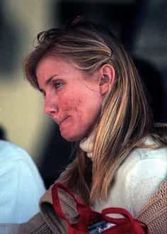
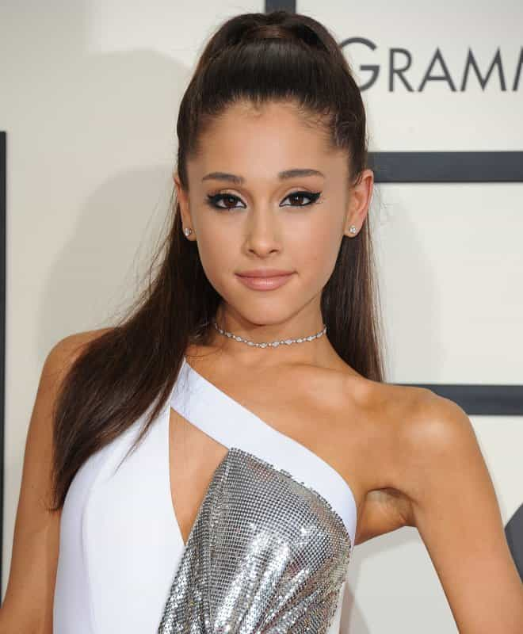
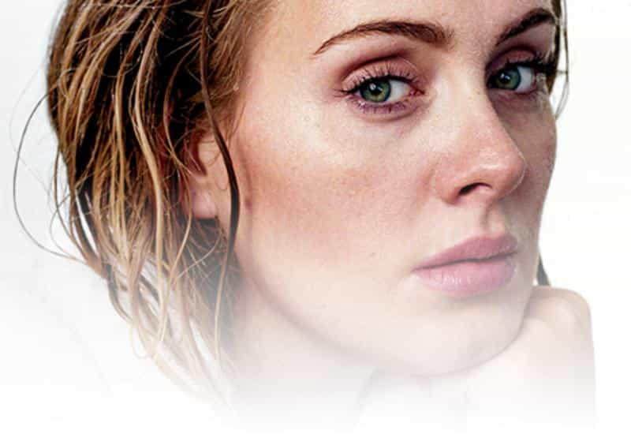
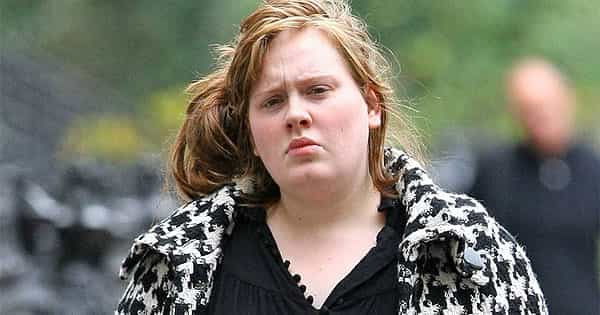
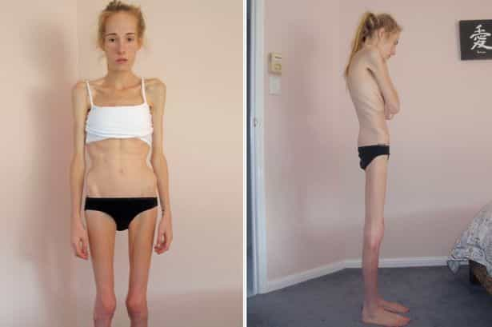

< < < Back
How Female Celebrities Are Responsible For Eating Disorders And Body Image Problems – Return Of Kings
Female body image issues, from anorexia to depression, are routinely blamed on men and the patriarchy. Women are portrayed as automatons meticulously conditioned to aim for a physical perfection they can never meet. Yet this is far from the truth. Instead, women are their own worst enemies. Despite telling fans to love themselves and “be who they really are,” female celebrities never show us who they really are. Or they change who they are completely via plastic surgery. The end result is millions of women who completely hate their faces and bodies because of how they compare to female actresses, singers, and models.
The impact of this fantasy on average womanhood is telling. Rates of eating disorders are the highest they have ever been, at the exact same time our celebrity-obsessed culture is the most vacuous and superficial it has ever been. When female celebrities give the illusion that, aside from a once-a-decade makeup-less selfie, they are creatures of flawless beauty, other women readily believe it.

It is long overdue that female celebrities take responsibility for the deleterious impact they have on other women’s assessments of their physical appearance. Blaming invisible, male-inspired forces for women’s self-inflicted woes is an excuse that does not hold water. If society stands any chance of arresting and then reversing body-related female mental illness, the stars need to be lead by example.
Yet this is supremely unlikely. Actresses and singers in particular advertise themselves by declaring they stand for “girl power” or “self-love.” And the way stars package themselves is 90% of the secret to their success, not talent or even hard work. At present, sadly, they are financially exploiting sad and vulnerable women who think they offer a recipe for self-esteem and confidence.
How famous women preach one standard and practice another, leading to women hating themselves
Ariana Grande
I think it’s so important for girls to love themselves and to treat their bodies respectfully.
I first called out Ariana Grande’s financial appropriation of feminism a long time ago. My verdict on her stands. She has written open letters about women loving themselves and their bodies, but seems to love never showing what she really looks like.
What she wants female fans and male admirers to see:

…versus what she doesn’t want them to see:

Not only is the self-hating make-up strong with this one, so too is the cosmetic surgery. When she talks about “female liberation” and other lovely combinations of (for her) big words, nothing is mentioned about the liberation she got from the scalpel or the plastic surgeon. Women who fawn over her looks and wish them for themselves are simply not aware that their girl power icon is feeding them drivel to pad her purse.
With role models such as these, there is little wonder why women are either flocking to plastic surgeons or developing body dysmorphic disorders
Adele
I’ve never wanted to look like models on the cover of magazines. I represent the majority of women and I’m very proud of that.
Yes, Adele is not slim. But she’s also a liar. In no sense is Adele representative of normal women or the majority of women, who cannot afford full-time make-up and style assistants, let alone have a music studio or other concern organize appointments for them.
The Adele without make-up we think is this:

…is actually this:

When female fans see Adele’s contrived no make-up photos for publications like Rolling Stone, not to mention her made-up red carpet appearances, what are they meant to think? “Wow, she looks pretty even without cosmetics! And I’m so ugly!” comes to mind.
The reason why Adele has escaped some of the occasional criticism leveled at female celebrities for fake appearances is because of her size. There seems to be some unwritten rule that women beyond a certain size are always open and honest about how they look. Yet we can see now that Adele is no different from many other well-known female figures. In fact, her transformation via make-up and photoshopping is arguably much more dramatic than slimmer stars.
If stars care about their fans, they should start acting like it

Celebrityhood is too often that wonderful game where the true trick of making money and becoming ever more famous are masked by attempts to appear nice, generous, and down-to-earth. The pawns, meanwhile, are the girls who either try to chase the impossible standards falsely presented by female celebrities or give up in anguish and self-hatred.
When society reflected more patriarchal norms, anorexia, bulimia, and other mental illnesses we see all the time today were so uncommon as to be almost non-existent. This pandemic of female body image issues can be placed squarely at the feet of feminism and female independence. Men had nothing to do with it and, as I have said before, virtually no men desire the anorexic and other girls that celebrity culture has produced.
If female celebrities are going to lie about their appearance, they can at least drop the mantras about helping other women love themselves.
Read More: British Socialist Politician Says Eating Disorders Are Caused By Female Narcissism